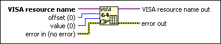

VISA Poke 64 Function
Owning Palette: Low Level Register Access Functions
Requires: Base Development System
Writes a 64-bit value to the specified address and stores the content of the value to the address pointed to by offset.
You must use the VISA Map Address function to map the address before you call this function. The address must be a valid memory address in the current process.

 Add to the block diagram Add to the block diagram |
 Find on the palette Find on the palette |